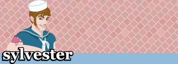
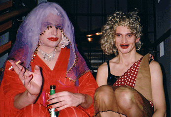

Åre Gay Days 03, Sylvester /Sylvia, Sweeden.
21/01 - 2003.


Ramona Macho och Dennis Agerblad til afterski.
Foto,Text: Maria Näslund
Homosar från hela landet var i Åre för att åka skidor, pulka, hundspann och naturligtvis festa.
Reference:
www.sylvia.se/content/article.asp?itemid=1129